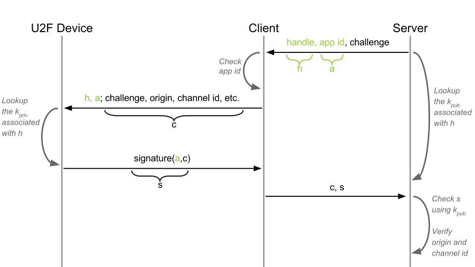
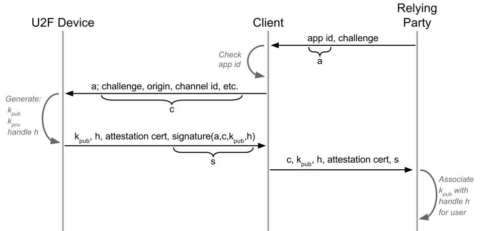

U2F is a challenge-response protocol extended with phishing and MitM protection, application-specific keys, device cloning detection and device attestation. There are two flows: registration and authentication.
We start out with a simple challenge-response authentication flow, based on public-key cryptography. The U2F device has a private key kpriv and the RP is given the corresponding public key kpub. The key pair is generated in the device’s tamper-resistant execution environment, from where kpriv cannot leave.

The concept is that the client compiles what it knows about the current HTTP connection (URI and TLS Channel ID). This information is then signed by the U2F device and sent to the RP, which verifies that the information is correct.
Additions to the authentication flow:
Origin (URI) — prevents phishing.
TLS Channel ID (optional) — prevents MitM.

Application-specific keys prevents relying parties from tracking devices between different user accounts. This means that Example.com cannot know whether User1 and User2 shares the same device.
The U2F device generates a new key pair and key handle for each registration. The handle is stored by the RP and sent back to the device upon authentication. This way, the device knows which key to authenticate with (e.g. User1's key or User2's key).
Additions to the authentication flow:
Key generation on the device
Key handle, stored by the server together with kpub.
App ID, used for scoping a key handle.

As already mentioned, Yubico’s U2F devices are tamper-resistant and kpriv cannot be read externally (at the very least not undetected). However, to provide cloning detection to U2F devices without tamper-resistant secure elements (e.g software implementations) we add an authentication counter. The concept is simple: The device increments the counter when authenticating, and the RP verifies that the counter is higher than last time.
Additions to the authentication flow:
A counter, sent from the device to the RP.

Attestation gives relying parties the possibility to verify token properties, such as token model. It is implemented via an attestation certificate, signed by the device vendor, that the device sends to the RP upon registration. Attestation does not affect the authentication flow.
Additions to the registration flow:
